|
👋 Mengzhuo Chen I am currently a PhD student at Institute of Software, Chinese Academy of Sciences. My research interest is broadly in Foundational LLMs, LLM Agents and Reliable AI/Systems. I am dedicated to bridging the gap between AI and systems in the real world, and making AI and systems more reliable. 📍 Beijing, China / 📧 Email / 📚 Google Scholar / 📚 ResearchGate |

|
🔥 News
|
📚 Publications |
|
UniReason-Med: A Shared Grounded Reasoning Interface for 2D-to-3D Transfer in Medical VQA Mengzhuo Chen, Yan Shu, Chi Liu, Hongming Piao, Xidong Wang, Derek Li, Bryan Dai
EMNLP 2026
The 2026 Conference on Empirical Methods in Natural Language Processing
Abstract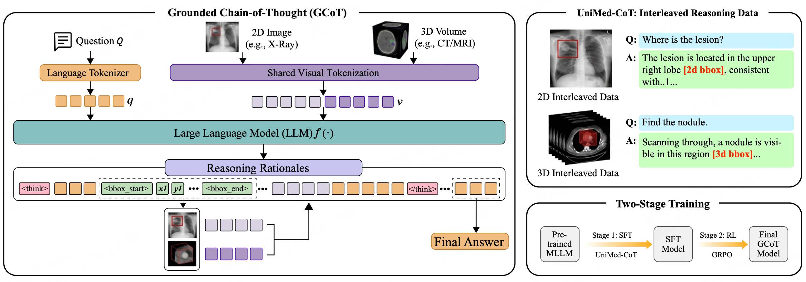 We study whether grounded reasoning supervision from abundant 2D medical images can improve 3D medical VQA when both input types are aligned through a common reasoning interface. We introduce UniReason-Med, a single-checkpoint framework that processes either a 2D image or a slice-serialized 3D volume at inference time, generating interleaved textual reasoning and localized visual evidence through shared box syntax, region-token injection, and a common grounded reasoning policy. To train this interface, we construct UniMed-CoT, a 220K instruction-tuning dataset with interleaved textual reasoning and grounded visual evidence, including 170K 2D and 50K 3D samples. Through supervised fine-tuning followed by outcome-level reinforcement learning, UniReason-Med learns to generate grounded reasoning traces without IoU/Dice-based localization rewards during RL. Data-mixture and component ablations show that joint 2D+3D grounded supervision substantially improves 3D reasoning over 3D-only training, while grounding and region-token injection consistently benefit both 2D and 3D tasks. These results suggest that a shared grounded reasoning interface can transfer reasoning structure from 2D images to slice-serialized volumetric medical understanding. |
|
Hybrid Open-Ended Tri-Evolution Makes Better Deep Researcher Hongming Piao, Chi Liu, Mengzhuo Chen, Yan Shu, Xidong Wang, Derek Li, Ying Wei, Bryan Dai
EMNLP 2026
The 2026 Conference on Empirical Methods in Natural Language Processing
Abstract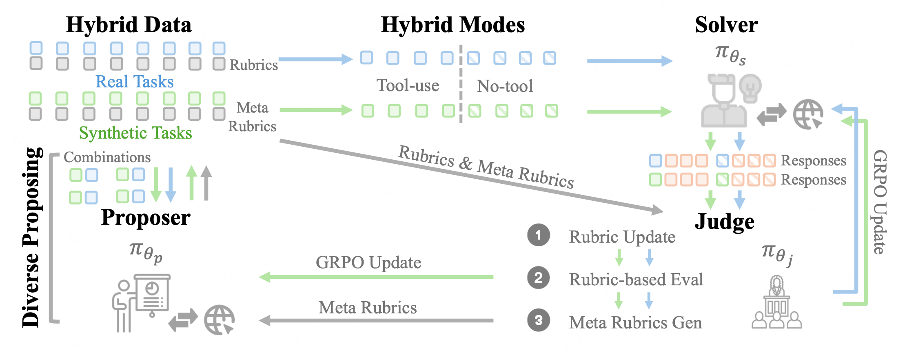 Deep research and agent evolution serve as de-facto tasks for AI agents in real-world applications toward artificial general intelligence. The former enables autonomous retrieval and integration of information in open-ended environments to tackle open-ended research tasks, yet it is constrained by the static parametric deep research capabilities of agent systems. The latter allows agents to autonomously interact with the environment to gain experiences that evolve model capabilities. However, its effectiveness has been widely validated only on verifiable tasks with standard answers, leaving a gap with open-ended research tasks. To bridge these two critical tasks, we propose the Hybrid Open-Ended Tri-Evolution (HOTE) framework, which leverages hybrid-mode reinforcement learning to facilitate the collaborative evolution of a proposer, solver and judge based on web-scale knowledge, moving toward autonomous evolving agents in open-ended tasks and environments. Extensive experiments on three long-form deep research benchmarks demonstrate that the 8B model trained via HOTE surpasses the strongest static open 8-32B models as well as those trained by state-of-the-art deep research training methods with less time overhead, and further verify that the evolution of all three modules in HOTE is indispensable. |
|
A Survey for LLM Agent Trajectory Analysis: From Failure Attribution to Enhancement Junjie Wang, Yawen Wang, Mengzhuo Chen, Xiaofei Xie, Chunyang Chen, Fangwen Mu, Zhe Liu, Qing Wang
TSE 2026
IEEE Transactions on Software Engineering (CCF-A)
Abstract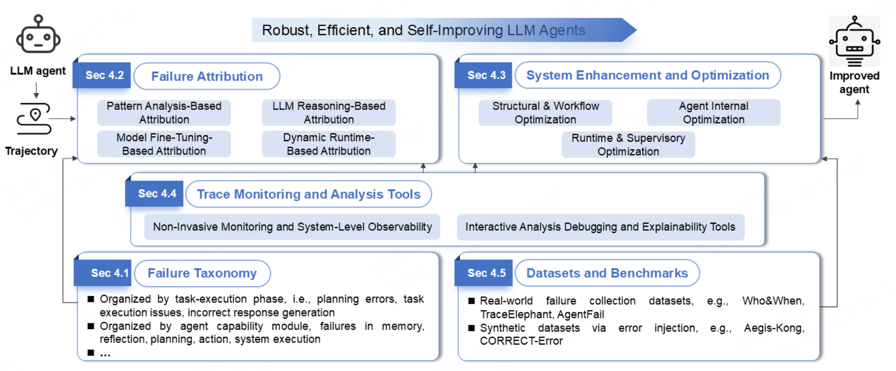 Large language model (LLM) agents have emerged as a transformative software paradigm, enabling autonomous task execution through natural language reasoning, multi-agent collaboration, and tool integration. However, their non-deterministic decision-making and complex interaction patterns introduce unprecedented challenges for failure diagnosis and system improvement. Unlike traditional software, where failures often manifest as code defects, agent failures are embedded in lengthy, language-heavy execution trajectories that include natural language reasoning, obscuring root causes and complicating repair. This survey provides a systematic review of the burgeoning field of trajectory analysis for failure attribution and system enhancement in LLM agents. We collect 55 papers published between early 2025 and April 2026, spanning software engineering, artificial intelligence, and human-computer interaction. We organize the literature along five key dimensions: failure taxonomy, failure attribution, system enhancement and optimization, trajectory monitoring and analysis tools, as well as datasets and benchmarks. Our analysis reveals that while the field has progressed rapidly from simple LLM prompting to causal inference, fine-tuned tracer models, and dynamic intervention, the step-level attribution accuracy remains limited, and benchmark diversity is still a bottleneck. We identify four complementary taxonomic perspectives, four methodological paradigms for attribution, and three families of enhancement strategies. We also critically assess existing benchmarks, highlighting a recent shift toward full observability and unrecoverable failure annotation. This survey serves as both a structured overview for current research and a strategic guide for advancing robust, efficient, and self-improving agent ecosystems. We further call upon the software engineering community to engage more deeply with this emerging class of software, bringing expertise in fault localization, program repair, and empirical methods to bear on the unique challenges posed by LLM agents. |
|
Piece by Piece: Automating Combination Interaction GUI Testing via Planning and Dual Memory Zhe Liu, Oujin Wang, Junjie Wang, Chunyang Chen, Mengzhuo Chen, Boyu Wu, Yuekai Huang, Qing Wang
ASE 2026
IEEE/ACM International Conference on Automated Software Engineering (CCF-A)
Abstract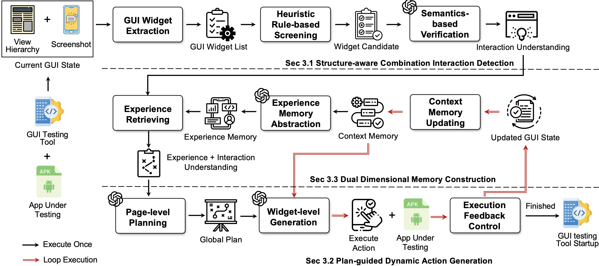 Combination interactions require coordinated operations across multiple GUI widgets within a page to complete a functional task, which are common in modern mobile apps. However, due to widget dependencies, dynamic interface transitions, and context-sensitive execution, existing automated GUI testing approaches based on predefined models or state exploration struggle to reliably complete such interactions. LLM-based GUI testing methods improve semantic understanding but often generate inconsistent actions due to the lack of coordination modeling and interaction context. To address these challenges, this paper proposes COMBDroid, an automated GUI testing approach that enables reliable completion of combination interactions through structured planning and dual memory. COMBDroid first detects combination interaction patterns from GUI structure, then generates page-level interaction plans and grounds them into widget-level executable actions. Inspired by Sudoku solving, COMBDroid maintains a dual-memory mechanism, where context memory preserves execution states within a functionality and experience memory captures reusable interaction patterns. COMBDroid is designed as an integrable module that activates when combination interactions are detected and allows existing testing tools to resume exploration after completion. We evaluate COMBDroid on 100 combination interaction functionalities collected from 100 mobile apps, comparing it with 15 state-of-the-art GUI testing baselines. COMBDroid achieves 103% higher passing rate than the best baseline and improves activity coverage by 65%-100% when integrated with existing testing tools. Furthermore, GUI testing tools integrated with COMBDroid detect 37 new crash bugs in real-world apps, with 26 fixed and the remaining confirmed by developers, demonstrating its effectiveness in improving GUI testing. |
|
From Failed Trajectories to Reliable LLM Agents: Diagnosing and Repairing Harness Flaws Mengzhuo Chen, Junjie Wang, Zhe Liu, Yawen Wang, Qing Wang
arXiv 2026
arXiv preprint
Abstract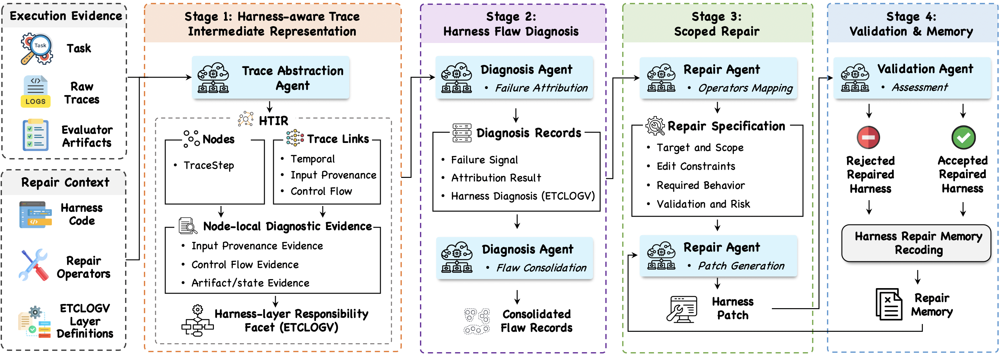 LLM-based agents increasingly rely on harnesses that provide execution environments, tool interfaces, context, lifecycle orchestration, observability, verification, and governance. Existing self-improving agents and automatic harness evolution methods mainly improve agents through runtime supervision, prompt optimization, workflow search, or harness modification based on final outcomes. However, they often fail to diagnose where the responsible evidence lies in failed trajectories and which harness layer causes the unreliable behavior, resulting in broad, indirect, or poorly scoped changes. This paper proposes HarnessFix, a trace-guided framework for diagnosing agent failures and repairing agent harnesses. HarnessFix compiles raw execution traces and harness code into a Harness-aware Trace Intermediate Representation (HTIR), which normalizes fragmented trajectory evidence and captures step-level provenance and control-flow relations. It then attributes failures to responsible trajectory steps and harness layers, consolidates recurring diagnoses into actionable flaw records, and maps them to scoped repair operators. Finally, HarnessFix generates and validates harness patches under flaw-specific repair specifications to reduce target flaws without introducing unacceptable regressions. We evaluate HarnessFix on SWE-Bench Verified, Terminal-Bench 2.0 Verified, GAIA and AppWorld. Across these benchmarks, HarnessFix improves held-out test performance over the initial harnesses by 15.2%-50.0%, outperforms human-designed and self-evolution baselines, and reveals recurring harness-flaw patterns across ETCLOVG layers. |
|
Seeing the Whole Elephant: A Benchmark for Failure Attribution in LLM-based Multi-Agent Systems Mengzhuo Chen, Junjie Wang, Fangwen Mu, Yawen Wang, Zhe Liu, Huanxiang Feng, Qing Wang
ACL 2026
Annual Meeting of the Association for Computational Linguistics (CCF-A)
Abstract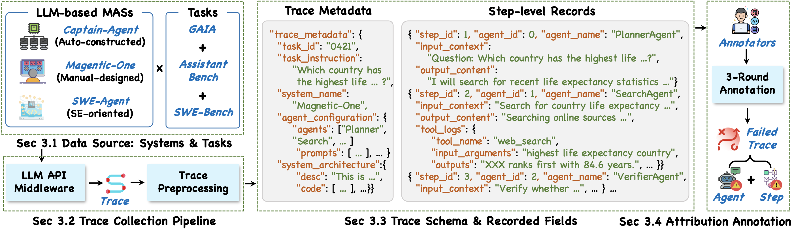 Failure attribution, i.e., identifying the responsible agent and decisive step of a failure, is particularly challenging in LLM-based multi-agent systems (MAS) due to their natural-language reasoning, nondeterministic outputs, and intricate interaction dynamics. A reliable benchmark is therefore essential to guide and evaluate attribution techniques. Yet existing benchmarks rely on partially observable traces that capture only agent outputs, omitting the inputs and context that developers actually use when debugging. We argue that failure attribution should be studied under full execution observability, aligning with real-world developer-facing scenarios where complete traces, rather than only outputs, are accessible for diagnosis. To this end, we introduce TraceElephant, a benchmark designed for failure attribution with full execution traces and reproducible environments. We then systematically evaluate failure attribution techniques across various configurations. Specifically, full traces improve attribution accuracy by up to 76% over a partial-observation counterpart, confirming that missing inputs obscure many failure causes. TraceElephant provides a foundation for follow-up failure attribution research, promoting evaluation practices that reflect real-world debugging and supporting the development of more transparent MASs. |
|
Scaling is Not All You Need: Clinical-Oriented Reinforcement Learning Makes Parameter-Efficient Clinical Reasoning Chi Liu, Yan Shu, Mengzhuo Chen, Hongming Piao, Zhijian Duan, Derek Li, Bryan Dai
ACL 2026
Annual Meeting of the Association for Computational Linguistics (CCF-A)
Abstract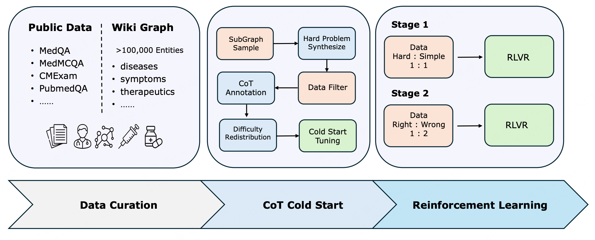 While large language models show promise in medical applications, achieving expert-level clinical reasoning efficiently remains challenging due to the need for massive amounts of manually labeled data and large-scale models. To address this challenge, we propose Clinical-Oriented Reinforcement Learning (CORL), the first fully open-source, end-to-end reinforcement learning training pipeline in the clinical reasoning domain, incorporating a Reasoning-Oriented Data Strategy (RODS) based on topological synthesis, CoT cold-start, and two-stage reinforcement learning. Through CORL, we trained the Fleming-R1 series of models. Among them, Fleming-R1-7B significantly outperforms models of comparable size while approaching or even surpassing certain 32B and 72B models. Fleming-R1-32B achieves near-parity with GPT-4o and outperforms the strongest open-source alternatives up to 671B in MedXpertQA. This demonstrates that in clinical reasoning field, a meticulously designed training pipeline holds greater importance than scaling model size alone. Data and Models are available at GitHub and Hugging Face. |
|
From Suspicious Signals to Crashes: Guiding Bug-driven GUI Testing via Code-inspired Tracing Mengzhuo Chen, Zhe Liu, Chunyang Chen, Junjie Wang, Boyu Wu, Yuekai Huang, Jun Hu, Qing Wang
FSE 2026
ACM International Conference on the Foundations of Software Engineering (CCF-A)
Abstract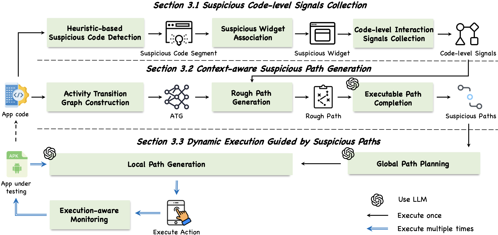 Mobile applications frequently suffer from crash bugs that are triggered under specific GUI interaction sequences. Existing automated GUI testing techniques mainly emphasize increasing coverage through diverse exploration strategies, but they often fail to reach the precise interaction contexts that lead to crashes, resulting in low bug detection efficiency. This paper proposes TraceDroid, a novel automated GUI testing approach that leverages suspicious code-level signals to guide dynamic exploration. Instead of treating static analysis as an independent detection method, TraceDroid uses heuristic rules distilled from real crash reports to detect suspicious code segments, associate them with GUI widgets, and collect code-level interaction signals. It then constructs the Activity Transition Graph (ATG), performs rough path generation, and employs LLM-based executable path completion to produce a set of suspicious paths. Finally, TraceDroid executes these paths through global path planning, local path generation, and execution-aware monitoring to efficiently expose crashes. We evaluate TraceDroid on 70 real crash bugs across 42 open-source apps, comparing it with 15 state-of-the-art baselines. TraceDroid achieves the best performance, with a recall of 77%, exceeding the best baseline by 28%, while maintaining comparable or higher coverage. Furthermore, TraceDroid successfully detects 21 previously unknown crash bugs in 116 popular Google Play apps, of which 15 have been fixed and 6 confirmed by developers, demonstrating its effectiveness in real-world scenarios. |
|
VEM: Environment-Free Exploration for Training GUI Agent with Value Environment Model Mengzhuo Chen, Jiani Zheng, Lu Wang, Fangkai Yang, Chaoyun Zhang, Lingrui Mei, Wenjie Yin, Qingwei Lin, Dongmei Zhang, Saravan Rajmohan
TMLR 2026
Transactions on Machine Learning Research
Abstract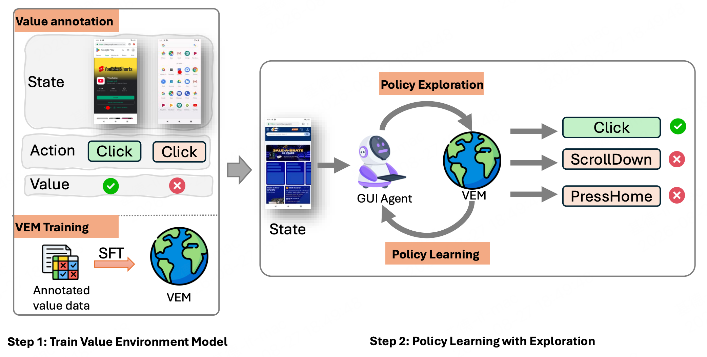 Training Vision-Language Models (VLMs) for Graphical User Interfaces (GUI) agents via Reinforcement Learning (RL) faces critical challenges: environment-based RL requires costly interactions, while environment-free methods struggle with distribution shift and reward generalization. We propose an environment-free RL framework that decouples action utility learning from policy optimization by leveraging a pretrained Value Environment Model (VEM), which requires no live environment interaction during policy optimization. VEM predicts value-aligned action utilities directly from offline data, distilling human-like priors about GUI interaction outcomes without requiring next-state prediction or environmental feedback. This avoids compounding errors and enhances resilience to UI changes by focusing on semantic reasoning (e.g., "Does this action advance the user's goal?"). The framework operates in two stages: (1) pretraining VEM to learn action-level utility signals and (2) guiding policy exploration with frozen VEM signals, enabling layout-agnostic GUI automation. Evaluated across diverse benchmarks including Android-in-the-Wild for mobile apps and Multimodal-Mind2Web for web environments, VEM achieves state-of-the-art or highly competitive performance in both offline and online settings. It significantly outperforms environment-free baselines and matches or exceeds environment-based approaches, crucially without incurring interaction costs. Importantly, VEM demonstrates that robust, generalizable GUI agents can be trained efficiently using semantic-aware action utility prediction, proving effective across distinct interaction platforms like mobile and web. The code is available at GitHub. |
|
Fleming-VL: Towards Universal Medical Visual Reasoning with Multimodal LLMs Yan Shu, Chi Liu, Mengzhuo Chen, Derek Li, Bryan Dai
arXiv 2025
arXiv preprint
Abstract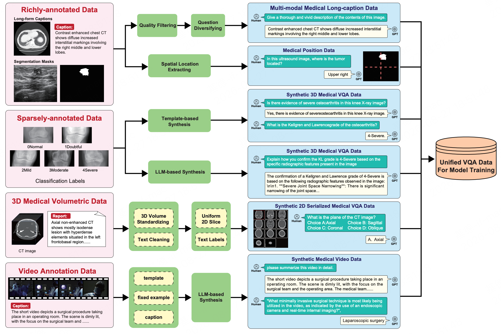 Multimodal Large Language Models (MLLMs) have demonstrated remarkable effectiveness in various general-domain scenarios, such as visual question answering and image captioning. Recently, researchers have increasingly focused on empowering MLLMs with medical conversational abilities, which hold significant promise for clinical applications. However, medical data presents unique challenges due to its heterogeneous nature -- encompassing diverse modalities including 2D images, 3D volumetric scans, and temporal video sequences. The substantial domain gap and data format inconsistencies across these modalities have hindered the development of unified medical MLLMs. To address these challenges, we propose Fleming-VL, a unified end-to-end framework for comprehensive medical visual understanding across heterogeneous modalities. Fleming-VL tackles this problem from a data-centric perspective through three key strategies: (1) scaling up pretraining by integrating long-context data from both natural and medical-specific domains; (2) complementing fine-tuning with rare medical data, including holistic video analysis and underrepresented 2D modalities such as ultrasound and dermoscopy images; (3) extending existing evaluation frameworks to incorporate 3D volumetric and video understanding benchmarks. Through supervised fine-tuning (SFT) and group relative policy optimization (GRPO), we develop Fleming-VL in multiple model scales. Extensive experiments demonstrate that Fleming-VL achieves state-of-the-art performance across multiple benchmarks, including medical VQA, video QA, and 3D medical image understanding. We publicly release Fleming-VL to promote transparent, reproducible, and auditable progress in medical AI. |
|
Seeing is Believing: Vision-driven Non-crash Functional Bug Detection for Mobile Apps Zhe Liu, Cheng Li, Chunyang Chen, Junjie Wang, Mengzhuo Chen, Boyu Wu, Yawen Wang, Jun Hu, Qing Wang
TSE 2025
IEEE Transactions on Software Engineering (CCF-A)
Abstract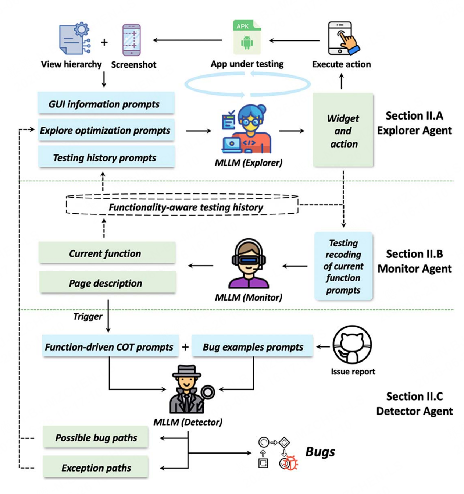 Mobile app GUI (Graphical User Interface) pages now contain rich visual information, with the visual semantics of each page helping users understand the application logic. However, these complex visual and functional logic present new challenges to software testing. Existing automated GUI testing methods, constrained by the lack of reliable testing oracles, are limited to detecting crash bugs with obvious abnormal signals. Consequently, many non-crash functional bugs, ranging from unexpected behaviors to logical errors, often evade detection by current techniques. While these non-crash functional bugs can exhibit visual cues that serve as potential testing oracles, they often entail a sequence of screenshots, and detecting them necessitates an understanding of the operational logic among GUI page transitions, which is challenging traditional techniques. Considering the remarkable performance of Multimodal Large Language Models (MLLM) in visual and language understanding, this paper proposes Trident, a novel vision-driven, multi-agent collaborative automated GUI testing approach for detecting non-crash functional bugs. It comprises three agents: Explorer, Monitor, and Detector, to guide the exploration, oversee the testing progress, and spot issues. We also address several challenges, i.e., align visual and textual information for MLLM input, achieve functionality-oriented exploration, and infer test oracles for non-crash bugs, to enhance the performance of functionality bug detection. We evaluate Trident on 590 non-crash bugs and compare it with 12 baselines, it can achieve more than 14%-112% and 108%-147% boost in average recall and precision compared with the best baseline. The ablation study further proves the contribution of each module. Moreover, Trident identifies 43 new bugs on Google Play, of which 31 have been fixed. |
|
Beyond Static GUI Agent: Evolving LLM-based GUI Testing via Dynamic Memory Mengzhuo Chen, Zhe Liu, Chunyang Chen, Junjie Wang, Yangguang Xue, Boyu Wu, Yuekai Huang, Libin Wu, Qing Wang
ASE 2025
IEEE/ACM International Conference on Automated Software Engineering (CCF-A)
Abstract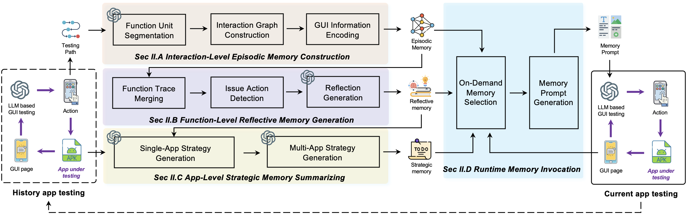 The development of Large Language Models (LLMs) enables LLM-based GUI testing to interact with graphical user interfaces by understanding GUI screenshots and generating actions, which are widely applied in industry and academia. However, current approaches test each app in isolation, lacking mechanisms for experience accumulation and reuse. This limitation often causes GUI testing approaches to miss deeper exploration and fail to trigger bug-prone functionalities. To address this, we propose MemoDroid, a three-layer memory mechanism that augments LLM-based GUI testing with the ability to evolve through repeated interaction. MemoDroid designs episodic memory to capture functional-level testing traces, reflective memory to summarize issue patterns and redundant behaviors, and strategic memory to synthesize cross-app exploration strategies. These memory layers are dynamically retrieved and injected into LLM prompts at runtime, enabling the agent to reuse successful behaviors, avoid ineffective actions, and prioritize bug-prone paths. We implement MemoDroid as a lightweight plugin, which can be integrated into existing LLM-based GUI testing approaches. We evaluate MemoDroid on real-world apps from 15 diverse app categories. Results show that MemoDroid enhances GUI testing performance across five baselines, with activity and code coverage increasing by 79% - 96% and 81% - 97%, and bug detection improving by 57% - 198%. Ablation studies confirm the contributions of each memory layer. Furthermore, MemoDroid detects 49 new bugs in 200 popular apps, with 35 confirmed fixes and 14 acknowledged by developers, showing its practical value in memory-driven GUI testing. |
|
Think Outside the Box: Automating Inter-App Functionality Testing via Memory Implanting and Reasoning Mengzhuo Chen, Zhe Liu, Chunyang Chen, Junjie Wang, Yangguang Xue, Boyu Wu, Libin Wu, Qing Wang
ICSE 2026
IEEE/ACM International Conference on Software Engineering (CCF-A)
Abstract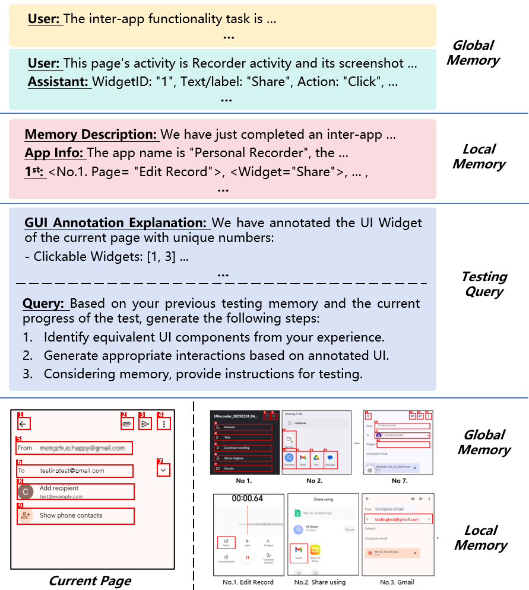 Inter-app functionality requires multiple apps to collaborate to complete a functional task, which has become essential in modern software ecosystems. However, due to the dynamic updates and openness of modern apps, automated GUI testing based on predefined interaction models or trained on historical data is difficult to achieve inter-app testing. The low fault tolerance and context-dependent characteristics of inter-app functionality paths, lead the LLM-based GUI testing to have UI semantic mapping ambiguity and irreversible operation generating problem. To address these challenges, this paper proposes InterDroid, an automated GUI testing approach that enhances inter-app testing by implanting structured semantic knowledge into LLM's memory. InterDroid retrieves relevant historical inter-app interactions using a multimodal retrieval method that integrates visual and textual GUI information, significantly improving retrieval accuracy. Inspired by the research on memory implantation in cognitive psychology, we design a memory implanting mechanism: global memory presents inter-app paths in a conversational form, simulating prior testing experience, and local memory tracks real-time state transitions. Additionally, InterDroid proposes a testing monitor that dynamically tracks testing progress and detects deviations, ensuring comprehensive test execution. InterDroid is designed as an integrable module that activates upon detecting the transition of the app to another app, allowing existing automated GUI testing tools to continue seamlessly after inter-app testing is completed. We evaluate InterDroid on 100 inter-app functionalities across 63 apps, comparing it with state-of-the-art GUI testing baselines. InterDroid achieves up to 133% improvement in page coverage, 124% in action coverage, and 268% in exact match accuracy over the best baseline. Furthermore, InterDroid detects 43 new crash bugs in real-world apps from Google Play, with 31 fixed and 12 confirmed by developers. |
|
Standing on the Shoulders of Giants: Bug-Aware Automated GUI Testing via Retrieval Augmentation Mengzhuo Chen, Zhe Liu, Chunyang Chen, Junjie Wang, Boyu Wu, Jun Hu, Qing Wang
FSE 2025
ACM International Conference on the Foundations of Software Engineering (CCF-A)
Abstract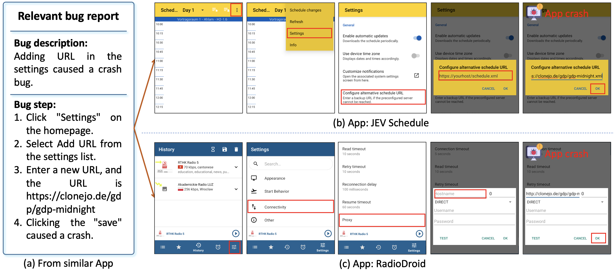 In software development, similar apps often encounter similar bugs due to shared functionalities and implementation methods. However, current automated GUI testing methods mainly focus on generating test scripts to cover more pages by analyzing the internal structure of the app, without targeted exploration of paths that may trigger bugs, resulting in low efficiency in bug discovery. Considering that a large number of bug reports on open source platforms can provide external knowledge for testing, this paper proposes BugHunter, a novel bug-aware automated GUI testing approach that generates exploration paths guided by bug reports from similar apps, utilizing a combination of Large Language Models (LLMs) and Retrieval-Augmented Generation (RAG). Instead of focusing solely on coverage, BugHunter dynamically adapts the testing process to target bug paths, thereby increasing bug detection efficiency. BugHunter first builds a high-quality bug knowledge base from historical bug reports. Then it retrieves relevant reports from this large bug knowledge base using a two-stage retrieval process, and generates test paths based on similar apps’ bug reports. BugHunter also introduces a local and global path-planning mechanism to handle differences in functionality and UI design across apps, and the ambiguous behavior or missing steps in the online bug reports. We evaluate BugHunter on 121 bugs across 71 apps and compare its performance against 16 state-of-the-art baselines. BugHunter achieves 60% improvement in bug detection over the best baseline, with comparable or higher coverage against the baselines. Furthermore, BugHunter successfully detects 49 new crash bugs in real-world apps from Google Play, with 33 bugs fixed, 9 confirmed, and 7 pending feedback. |
|
CultureLLM: Incorporating Cultural Differences into Large Language Models Cheng Li, Mengzhuo Chen, Jindong Wang, Sunayana Sitaram, Xing Xie
NeurIPS 2024
Advances in Neural Information Processing Systems (Vol. 37, pp. 84799-84838)
Abstract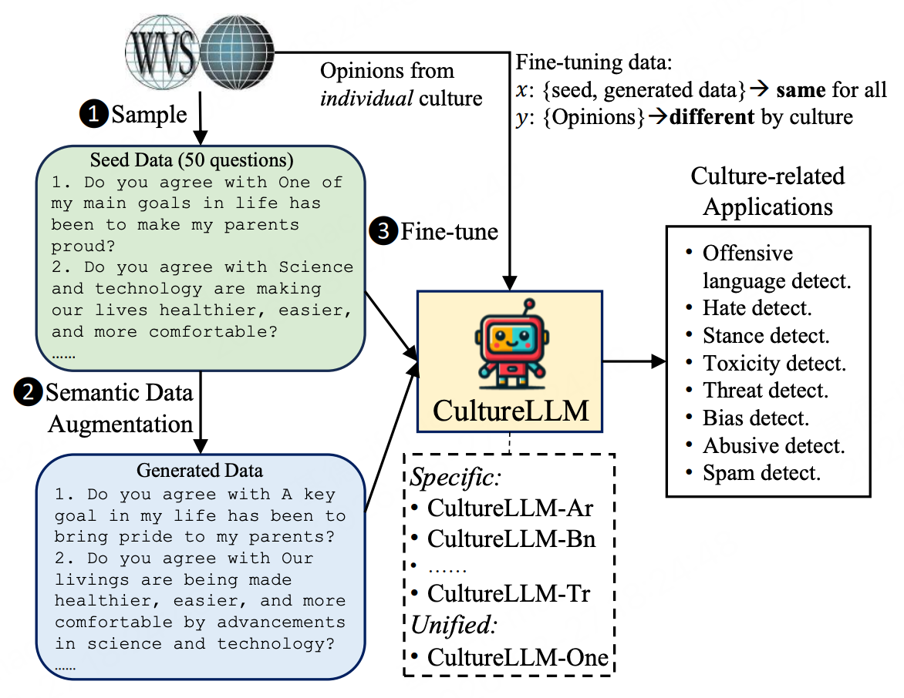 Large language models (LLMs) have been observed to exhibit bias towards certain cultures due to the predominance of training data obtained from English corpora. Considering that multilingual cultural data is often expensive to procure, existing methodologies address this challenge through prompt engineering or culture-specific pre-training. However, these strategies may neglect the knowledge deficiency of low-resource cultures and necessitate substantial computing resources. In this paper, we propose CultureLLM, a cost-effective solution to integrate cultural differences into LLMs. CultureLLM employs the World Value Survey (WVS) as seed data and generates semantically equivalent training data through the proposed semantic data augmentation. Utilizing WVS seed samples with augmented data, we fine-tune culture-specific LLMs as well as a unified model (CultureLLM-One) across rich and low-resource languages. Extensive experiments on culture-related datasets show that CultureLLM surpasses a range of counterparts while demonstrating performance comparable to or exceeding GPT-4. Our human study indicates that the generated samples maintain semantic equivalence to the original samples, offering an effective solution for LLM augmentation. Code is released at GitHub. |
|
🏆 Unblind Text Inputs: Predicting Hint-text of Text Input in Mobile Apps via LLM Zhe Liu, Chunyang Chen, Junjie Wang, Mengzhuo Chen, Boyu Wu, Yuekai Huang, Jun Hu, Qing Wang
CHI 2024
ACM CHI Conference on Human Factors in Computing Systems (CCF-A)
Abstract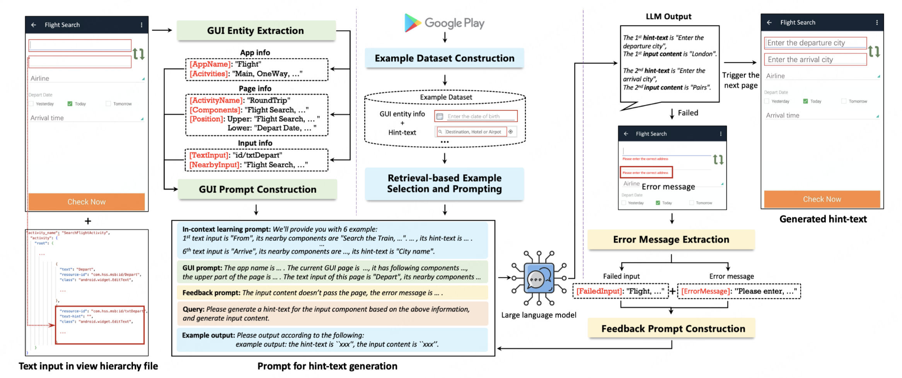 Mobile apps have become indispensable for accessing and participating in various environments, especially for low-vision users. Users with visual impairments can use screen readers to read the content of each screen and understand the content that needs to be operated. Screen readers need to read the hint-text attribute in the text input component to remind visually impaired users what to fill in. Unfortunately, based on our analysis of 4,501 Android apps with text inputs, over 0.76 of them are missing hint-text. These issues are mostly caused by developers' lack of awareness when considering visually impaired individuals. To overcome these challenges, we developed an LLM-based hint-text generation model called HintDroid, which analyzes the GUI information of input components and uses in-context learning to generate the hint-text. To ensure the quality of hint-text generation, we further designed a feedback-based inspection mechanism to further adjust hint-text. The automated experiments demonstrate the high BLEU and a user study further confirms its usefulness. HintDroid can not only help visually impaired individuals, but also help ordinary people understand the requirements of input components. |
|
Testing the Limits: Unusual Text Inputs Generation for Mobile App Crash Detection with Large Language Model Zhe Liu, Chunyang Chen, Junjie Wang, Mengzhuo Chen, Boyu Wu, Zhilin Tian, Yuekai Huang, Jun Hu, Qing Wang
ICSE 2024
IEEE/ACM International Conference on Software Engineering (CCF-A)
Abstract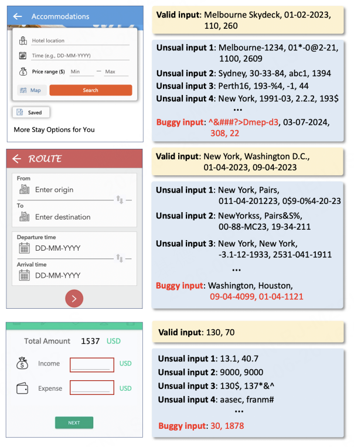 Mobile applications have become a ubiquitous part of our daily life, providing users with access to various services and utilities. Text input, as an important interaction channel between users and applications, plays an important role in core functionality such as search queries, authentication, messaging, etc. However, certain special text (e.g., -18 for Font Size) can cause the app to crash, and generating diversified unusual inputs for fully testing the app is highly demanded. Nevertheless, this is also challenging due to the combination of explosion dilemma, high context sensitivity, and complex constraint relations. This paper proposes InputBlaster which leverages the LLM to automatically generate unusual text inputs for mobile app crash detection. It formulates the unusual inputs generation problem as a task of producing a set of test generators, each of which can yield a batch of unusual text inputs under the same mutation rule. In detail, InputBlaster leverages LLM to produce the test generators together with the mutation rules serving as the reasoning chain, and utilizes the in-context learning schema to demonstrate the LLM with examples for boosting the performance. InputBlaster is evaluated on 36 text input widgets with cash bugs involving 31 popular Android apps, and results show that it achieves 78% bug detection rate, with 136% higher than the best baseline. Besides, we integrate it with the automated GUI testing tool and detect 37 unseen crashes in real-world apps from Google Play. |
|
Make LLM a Testing Expert: Bringing Human-like Interaction to Mobile GUI Testing via Functionality-aware Decisions Zhe Liu, Chunyang Chen, Junjie Wang, Mengzhuo Chen, Boyu Wu, Xing Che, Dandan Wang, Qing Wang
ICSE 2024
IEEE/ACM International Conference on Software Engineering (CCF-A)
Abstract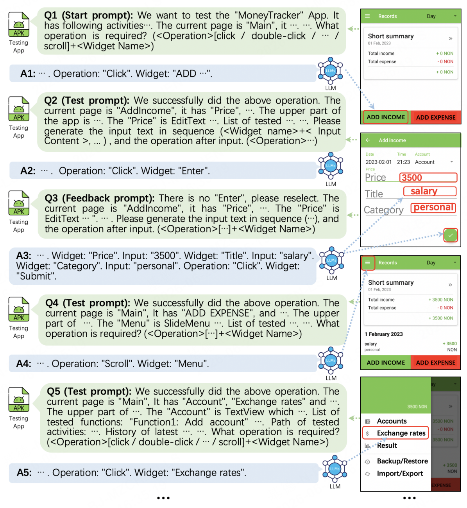 Automated Graphical User Interface (GUI) testing plays a crucial role in ensuring app quality, especially as mobile applications have become an integral part of our daily lives. Despite the growing popularity of learning-based techniques in automated GUI testing due to their ability to generate human-like interactions, they still suffer from several limitations, such as low testing coverage, inadequate generalization capabilities, and heavy reliance on training data. Inspired by the success of Large Language Models (LLMs) like ChatGPT in natural language understanding and question answering, we formulate the mobile GUI testing problem as a Q&A task. We propose GPTDroid, asking LLM to chat with the mobile apps by passing the GUI page information to LLM to elicit testing scripts, and executing them to keep passing the app feedback to LLM, iterating the whole process. Within this framework, we have also introduced a functionality-aware memory prompting mechanism that equips the LLM with the ability to retain testing knowledge of the whole process and conduct long-term, functionality-based reasoning to guide exploration. We evaluate it on 93 apps from Google Play and demonstrate that it outperforms the best baseline by 32% in activity coverage, and detects 31% more bugs at a faster rate. Moreover, GPTDroid identify 53 new bugs on Google Play, of which 35 have been confirmed and fixed. |
|
Thank you for visiting! Feel free to contact me if you have any questions.
Last Update: August, 2026 |